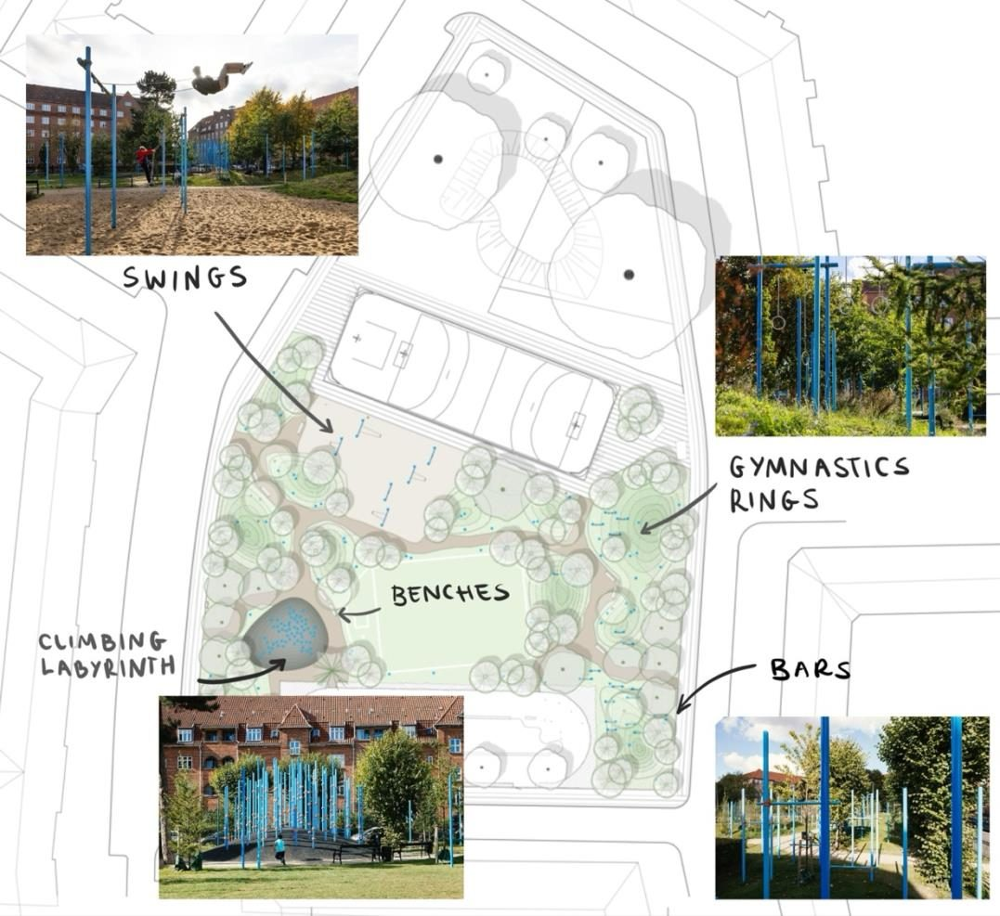

Research · Group project · 2024
In Defense of Public Adult Play
How can public spaces in Copenhagen be planned to make adults play?
Abstract
This research examines how public urban spaces in Copenhagen can be planned to encourage adult play practices. Drawing on Practice Theory, the study analyses how materials, competences and meanings shape adult play, challenging the assumption that play is primarily for children. Using case studies, observations, document analysis, expert interviews and a survey, the research shows that adult play is supported by natural environments and social infrastructure but constrained by social stigma and physical ability. The findings highlight how adult play is often reframed as exercise or competition to gain legitimacy. The study argues for urban spaces that support diverse forms of adult play and introduces the concept of “The Right to the Playground” as a planning principle for equitable access to playful public spaces.
Methods
The project applied a qualitative, theory-driven research design grounded in Practice Theory to analyse adult play in public space. Two case studies in Copenhagen, Guldbergs Plads and a grass field in Fælledparken, were selected to compare different spatial and social conditions. Empirical data was collected through on-site observations, document analysis of planning strategies, expert interviews and a survey. Observations focused on how adults used space, interacted with others and navigated social norms around play. Interviews with planners, designers and private play operators provided insights into institutional perspectives and design intentions. The survey complemented qualitative findings by capturing broader perceptions of adult play, barriers and motivations. This mixed-method approach allowed the project to connect everyday practices with planning frameworks and welfare-state contexts.

Implications & Personal Learning
The findings suggest that adult play is less constrained by spatial absence than by social norms, stigma and perceived legitimacy. Natural environments and flexible spaces support adult play, while rigid or overly programmed designs tend to limit it. Adult play is often reframed as exercise, competition or fitness to align with socially accepted meanings. For planning practice, this implies that enabling adult play requires addressing both spatial design and cultural meanings. Public spaces should support a range of playful competences, abilities and seasonal uses to ensure inclusivity.
Through this project, I learned to analyse public space as a product of practices rather than fixed functions. Personally, the research strengthened my ability to link theory, empirical observation and concrete planning recommendations, and deepened my interest in human-centred and welfare-oriented urban planning.
A checklist for planners
Based on our findings we formulated a checklist that planners can use when they plan for play:
- Who do you want? Planning for everyone doesn't work when planning for play. Choose a clear target group and design play elements for them.
- Look & fit. Adjust colours and materials to adult tastes.
- People magnet. Attract and keep other people (beyond the target group) as social infrastructure. They don't have to play.
- Beginner friendly. Make it easy to join in. Include elements that work for low physical and mental confidence or ability.
- Challenge time. Match the target group's competences and enable competition on different levels.
- Nature. Nature appeals to most people. Use seasonality playfully and integrate climate adaptation features.
- Open space. Leave room for unplanned, spontaneous play.
- No sweat without fun. Offer fitness potential, but keep fun as the main focus.
- No fun without risk. Add exciting elements. Play involves risk, but it should not be dangerous.
- Outside the ordinary. Create an environment that feels different from everyday life, making it easier to play (and be a bit weird).
- Be aware of kids. Kids can spark play for parents and playful adults, but they can also dominate an area and discourage adult play.
- The right to the playground. Some groups may be marginalised. Observe who uses the space, how it develops, and who feels welcome.
Interested in the full report or in planning for play? I am happy to share it.
Write me: lennart.reichow@gmail.com